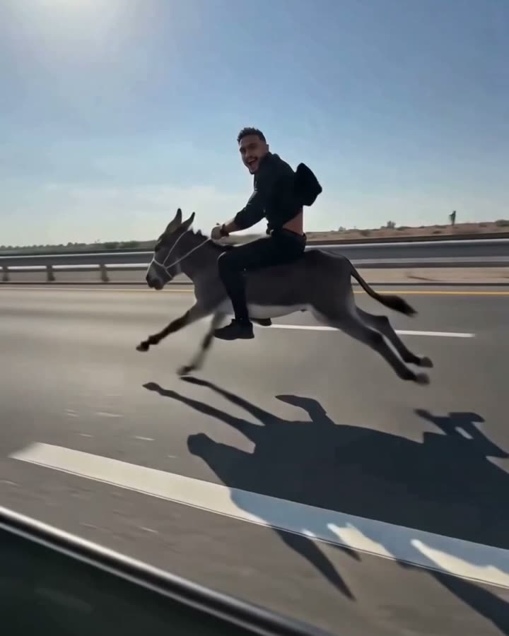

الفيديو ده جابلي 97 ألف مشاهدة… وكلّفني 6 جنيه
ده البرومبت اللي عملت بيه فيديو الحمار على الطريق السريع في CapCut بموديل Seedance 2.0

الخطوات
- افتح CapCut من الموبايل وادخل على AI Lab.
- اختار Video وموديل Seedance 2.0.
- دوس + وارفع صورة واضحة ليك (الوش باين كويس).
- اختار 10s و9:16 و720p.
- انسخ البرومبت اللي تحت والزقه، ودوس إرسال ↑.
البرومبت
A continuous one-shot video with natural handheld smartphone camera shake, filmed from the perspective of a passenger looking out a side window of a moving car. The setting is a sun-drenched multi-lane highway. The subject, the person in the uploaded photo, is riding on the back of a small donkey that is sprinting at an impossible, extremely high speed along the asphalt road. The donkey's legs are a blur of rapid motion, creating visible afterimages. Strong wind blasts through the scene, causing the person's clothes to flap violently. The person is bouncing intensely and chaotically with every rapid stride of the donkey, gripping its mane firmly with a look of pure, screaming thrill and excitement on his face. The entire scene vibrates from the high-speed travel. Audio features the deafening roar of rushing wind, the rapid-fire rhythmic pounding of donkey hooves on pavement, and the low-frequency hum of highway driving. No cuts, no transitions, raw smartphone footage aesthetic.
ده نفس البرومبت اللي استخدمته بالظبط، غيّرت بس مكان [user_input_1] (الشخص) لكلام يفهم منه الموديل إنه الشخص اللي في صورتك.
هيكلّفك كام؟
الأسعار والكريديت دي كانت وقت ما عملت الفيديو، وممكن تتغيّر.
- الخاصية للمشتركين في CapCut Pro.
- أول شهر بـ 49.99 جنيه، وبعده 499.99 جنيه في الشهر (سعر App Store مصر، وممكن يختلف على أندرويد أو الويب).
- الاشتراك فيه 1,200 كريديت في الشهر، والفيديو ده خد 153 كريديت.
- يعني الفيديو ≈ 6 جنيه في شهر العرض… و≈ 64 جنيه بعده.
نصايح
- استخدم صورة لوحدك، إضاءتها كويسة والوش واضح، عشان الشخص يطلع شبهك.
- عايز تغيّر الحيوان؟ بدّل small donkey بـ camel أو horse 😄
- لو مش هتكمّل الاشتراك، الغيه قبل ما الشهر الأول يخلص.